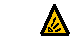
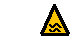
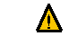
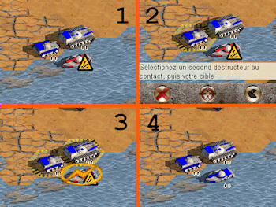

En approchant vos destructeurs de la Vedette, un icône est apparu. Il indique
la neutralisation de la Vedette : votre adversaire ne peut plus l'utiliser.

Pion neutralisé au cause d'une zone de feu adverse

Pion neutralisé au cause de la marée

Si deux chars sont côte à côte sur une montagne, l'un d'eux ne génère pas de zone de feu.
Lorsque vos deux destructeurs seront au contact de la vedette, vous pourrez la contrôler.

Vos deux destructeurs sont au contact de la cible.
Cliquez sur l'un d'eux, puis sur l'icône contrôle qui vient d'apparaître.
Cliquez sur votre second destructeur, puis la cible.